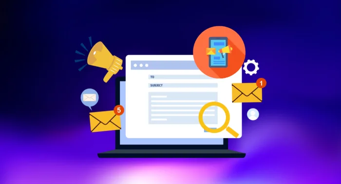

ในยุคที่ลูกค้าถูกถาโถมด้วยข้อมูลและโฆษณาจำนวนมหาศาล การสื่อสารให้ตรงคน กลายเป็นหัวใจสำคัญของการทำการตลาด หากยังใช้วิธีส่งข้อความแบบหว่าน (Mass) เหมือนในอดีต โอกาสที่ลูกค้าจะสนใจและตัดสินใจซื้อก็ลดลงอย่างชัดเจน
นี่จึงเป็นเหตุผลที่ Boost SMS เข้ามามีบทบาทสำคัญในธุรกิจยุคใหม่ เพราะไม่ใช่แค่การส่ง SMS ธรรมดา แต่เป็นการยิงข้อความให้ตรงกลุ่มเป้าหมายแบบแม่นยำ พร้อมเพิ่มโอกาสปิดการขายได้เร็วขึ้น
Boost SMS คืออะไร และช่วยปิดการขายได้อย่างไร?
Boost SMS คือระบบส่งข้อความที่ถูกพัฒนาให้ฉลาดขึ้น โดยใช้ข้อมูลลูกค้า (Data) และเทคโนโลยีอัตโนมัติ (Automation) มาช่วยวิเคราะห์และคัดกรองว่าควรส่งอะไร ให้ใคร และเมื่อไร
ผลลัพธ์คือ
- ลูกค้าได้รับข้อความที่ "ตรงความสนใจ"
- ลดการรบกวนจากข้อความที่ไม่เกี่ยวข้อง
- เพิ่มโอกาสให้ลูกค้าตัดสินใจซื้อทันที
พูดง่าย ๆ คือ จาก "ยิงมั่ว" กลายเป็น "ยิงแม่น"
ยิงข้อความให้ตรงกลุ่ม = เพิ่ม Conversion แบบเห็นผล

หัวใจของ Boost SMS คือการแบ่งกลุ่มลูกค้า (Segmentation) อย่างมีประสิทธิภาพ เช่น
- ลูกค้าใหม่ → ส่งโปรโมชันต้อนรับ
- ลูกค้าเก่า → ส่งข้อเสนอพิเศษเฉพาะคนเคยซื้อ
- ลูกค้าที่กำลังลังเล → ส่งดีลกระตุ้นการตัดสินใจ
เมื่อข้อความตรงใจมากขึ้น โอกาสที่ลูกค้าจะคลิก อ่าน และซื้อก็เพิ่มขึ้นตามไปด้วย
ทำไม Boost SMS ถึงปิดการขายได้ไวกว่า?
1. ส่งถึงทันที และถูกเปิดอ่านสูง
SMS เป็นช่องทางที่มี Open Rate สูงมาก (เกือบ 100%) และลูกค้ามักเปิดอ่านภายในไม่กี่นาที
2. สื่อสารสั้น กระชับ ตรงจุด
Boost SMS เน้นข้อความที่
- เข้าใจง่าย
- มี Call-to-Action ชัดเจน
- กระตุ้นให้ "ตัดสินใจทันที"
3. ใช้ Data ช่วยยิงให้โดน
ไม่ใช่แค่ส่งเร็ว แต่ส่งถูกคน เช่น
- คนที่เคยดูสินค้าแต่ยังไม่ซื้อ
- คนที่กำลังจะหมดโปรโมชั่น
- คนที่มีพฤติกรรมพร้อมซื้อ
4. Automation ช่วยปิดการขายแบบ Real-time
Boost SMS สามารถตั้งค่าให้ส่งอัตโนมัติ เช่น
- ลูกค้าทิ้งตะกร้า → ยิง SMS เตือนทันที
- มี Flash Sale → แจ้งลูกค้า VIP ก่อนใคร
- ใกล้หมดเวลา → ส่งข้อความเร่งปิดดีล
ตัวอย่างการใช้งานจริง

E-commerce
ยิง SMS ไปหาลูกค้าที่ใส่สินค้าในตะกร้าแต่ยังไม่จ่ายเงิน เพิ่มโอกาสปิดการขายได้ทันที
ธุรกิจบริการ
ส่ง SMS แจ้งโปรโมชันเฉพาะลูกค้าเก่า กระตุ้นให้กลับมาใช้บริการซ้ำ
ธุรกิจการเงิน
แจ้งเตือนดีลหรือข้อเสนอเฉพาะบุคคล เพิ่ม Conversion โดยไม่ต้องใช้โฆษณาหนัก
เทคนิคใช้ Boost SMS ให้ได้ผลสูงสุด
เพื่อให้ Boost SMS ทำงานได้เต็มประสิทธิภาพ ควรโฟกัส 3 เรื่องหลัก
1. ข้อมูลต้องแม่น
เก็บ Data ลูกค้าให้ละเอียด เช่น
- ประวัติการซื้อ
- พฤติกรรมการใช้งาน
- ความสนใจ
2. ข้อความต้องโดน
ตัวอย่างข้อความที่ดี
- มีชื่อผู้รับ (Personalization)
- มีข้อเสนอชัดเจน
- มี Deadline (สร้างความเร่งด่วน)
3. ส่งถูกเวลา
- ช่วงพักกลางวัน
- หลังเลิกงาน
- ช่วง Flash Sale
Boost SMS vs การตลาดแบบเดิม
| ปัจจัย | การตลาดแบบเดิม | Boost SMS |
|---|---|---|
| ความแม่นยำ | ต่ำ | สูง |
| การเข้าถึง | ไม่แน่นอน | สูงมาก |
| ความเร็ว | ช้า | Real-time |
| Conversion | ปานกลาง | สูงกว่าอย่างชัดเจน |
สรุป: Boost SMS คืออาวุธลับของการปิดการขายยุคใหม่
ในโลกที่การแข่งขันสูงขึ้นทุกวัน การสื่อสารแบบหว่าน ไม่เพียงพออีกต่อไป ธุรกิจที่ต้องการยอดขายต้องเปลี่ยนมาใช้เครื่องมือที่แม่นและเร็ว Boost SMS จึงไม่ใช่แค่เครื่องมือส่งข้อความ แต่เป็นตัวเร่งยอดขายที่ช่วยให้คุณ
- เข้าถึงลูกค้าได้ตรงกลุ่ม
- สื่อสารได้ตรงจุด
- และปิดการขายได้เร็วกว่าเดิม
ถ้าคุณกำลังมองหาวิธีเพิ่มยอดขายแบบเห็นผลจริงในระยะสั้น Boost SMS คือหนึ่งในเครื่องมือที่ควรเริ่มใช้ทันที